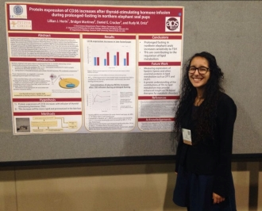

There is far more to being a researcher than laboratory work. Scientists must disseminate their ideas. One possible avenue, especially for undergraduates, is the poster presentation. Having given many poster presentations, many of which have won presentation awards, I compiled a list of tips that I believe made my experience a positive one. I hope this will take the mystery out of presenting and even make it an enjoyable process.
Poster presentations consist of a presenter, a poster, and an audience member (usually a scientist, judge, or community member). The student delivers a 5-10 minute presentation with the observer usually asking questions throughout. Most presentations occur at science conferences, though scientific symposia are also common, especially after summer research experiences.
But what are the important elements of a poster presentation? How do you design the poster and interact effectively with the observer? There are three overarching aspects which contributed to my success: mastery of the story, logical flow in poster design, and engaging the audience.
Understanding your research is the baseline requirement that should be met for any poster presentation, much less an award-winning one. This includes setting up the "problem" effectively and getting a full background on the model organism and treatments being applied. As a researcher, the ability to critique your own work by asking questions is imperative. For example:
If you find yourself with a question, don't ignore it. On the contrary, immediately write it down and seek to answer it. If there is no more time to run more experiments, read the literature. Always read the literature. You know your project better than anyone else.
There are many types of observers, most notably people who interact with you and those who just want to read your poster without your presentation. For that reason, your poster should be able to tell the story whether you're in front of it or not. A few key ways to organize include:
Finally, avoid using full paragraphs of text. No one wants to read a wall of text. Your audience will only pay attention to you or your poster's text, but not both. Short bullet point sentences are optimal for the attention span of your audience and as mini-reminders for you while you are presenting.
***Before printing your poster*** I highly recommend:
The key to presenting is formal but comfortable body language. One easy way to do this is to keep eye contact with the audience members. This allows you to gauge whether they are understanding and interested in your presentation so you can make adjustments as needed. Not making eye gives off an impression of nervousness and lack of preparation. Before you transition, ask them if they have any questions. A simple "has everything I've said made sense so far?" should suffice.
This is your chance to show off how incredible your work is, so be enthusiastic while you are presenting. Not overwhelmingly so - jittery limbs flying around distracting. Keep your arms lightly clasped, only unlinking as necessary, and keep a smile on your face. This may seem obvious, but do not forget to maintain composure during critique of your work.
Speaking of critiques, it is vital to be receptive to criticism. After all, presentations are not about winning awards, but rather sharing your work with the scientific community to receive feedback. The goal of criticism is not to tear you down, but to improve your work through another perspective. When you are presenting, be honest about your work. If your data is only preliminary, or it contradicts the literature, be honest about that and explain what you expect to see with further experiments. And when you do receive critique, thank them for helping you see another side to your story.
Contrary to popular belief, you do not have to have much experience presenting to win an award. In fact, the first award I won for a presentation was for my first real poster presentation! I had thought that presenting and winning an award would only come after years of working and presenting on the same topic. I am here to tell you that, with the right mentorship and preparation, you do not have to be an expert in presentations in order to deliver an award winning poster presentation.
The key to winning an award is to engage your audience and show them that you know and love your subject. One means by which judges assess knowledge is asking questions. There's quite a bit of luck involved with regards to the questions you are asked; during every presentation where I have won an award, I have been able to answer most if not all of the questions my judges asked me. If you ever get a question where you are unsure, redirect the question to focus on how you would test such a question experimentally. Saying "I don't know" or making things up is the best way to take yourself out of the running for an award.
Another means of testing your knowledge is simple observation. Judges are looking to see whether you prepared for your presentation. Nervous tics undermine an otherwise well-constructed presentation. Rushing through a presentation shows anxiety, and "uhms" relay uncertainty to the presenter. To date, the most helpful technique I have used is recording myself on camera the hour before my presentation. Record your entire presentation, watch the video, and give the presentation again. After several recordings, my nervous tics always disappeared completely.
If you show the judges that you know your project, are enthusiastic about it, and that it has broader impacts, you may be in the running for an award. However, even if you do not win, presenting itself is a great way to get your name out into the community.
Well, you were probably going to invite your friends anyway, but having friends come support while a judge is around can really help decrease nerves, and make the overall process way more fun.
Additionally, if you are at a conference and have an opportunity to network, I highly recommend inviting old PIs, new contacts, and graduate/medical school recruiters to your poster. Though they will not always make it, you never know what will come out of it if they do: a glowing recommendation letter, inside information about programs, future research opportunities, and even a positive word for your post-baccalaureate applications.
Good luck, and more importantly, have fun! Presenting is an immense opportunity for growth. I hope you gain skills through presenting that will be helpful in your scientific journey.
If for any reason these resources go offline, I have them saved. Please email me if you would like a copy.
Colin Purrington - Designing Conference Posters
Preparing and Presenting Effective Research Posters